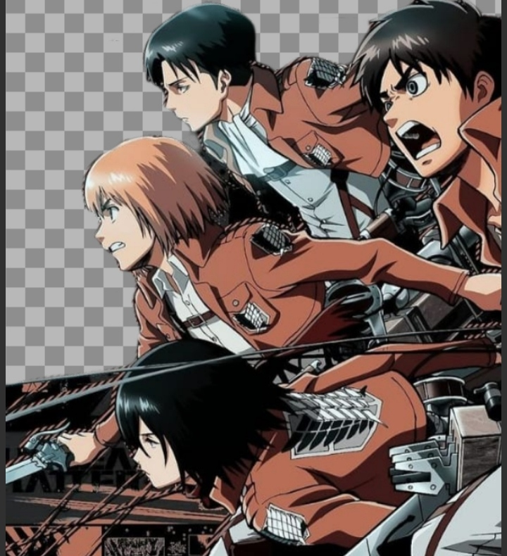
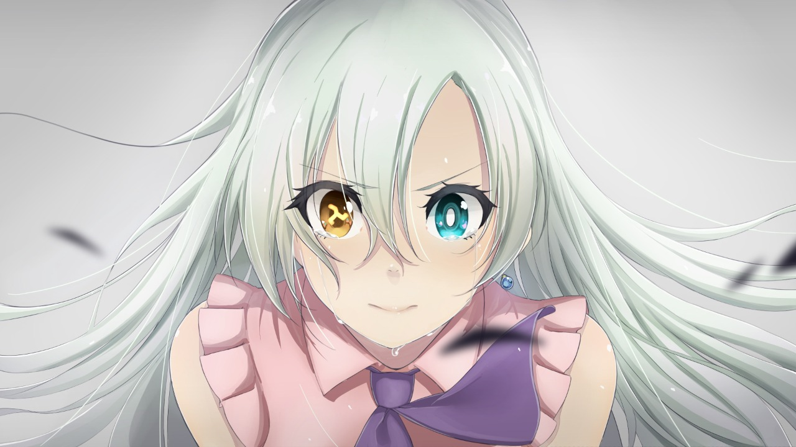
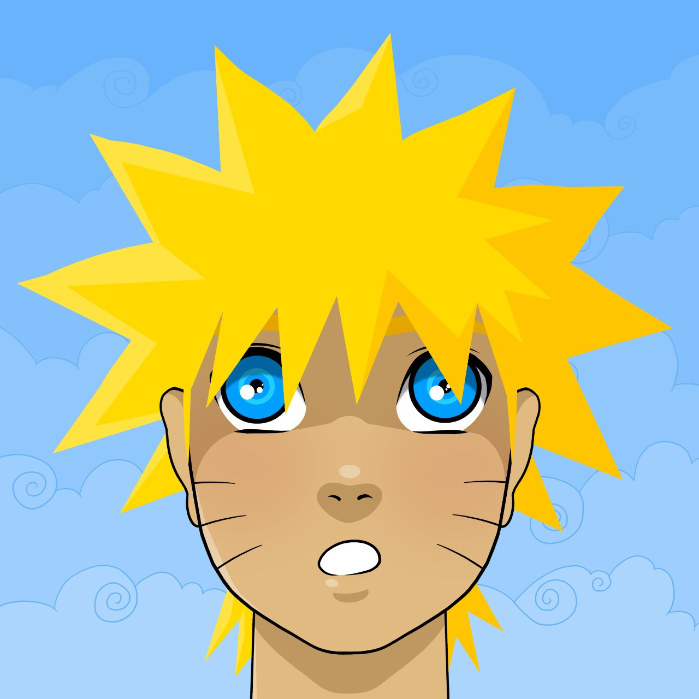

Shingeki no Kyojin
Há várias décadas atrás, a humanidade foi quase exterminada pelo súbito aparecimento de seres humanoides, conhecido como Titãs. Durante 107 anos, a cidade fortificada foi testemunha de ataques dos Titãs sem sucesso, até que um dia, o jovem Eren Jaeger e sua irmã adotiva, Mikasa Ackerman, foram testemunhas da aparição de um Titã colossal, fazendo uma abertura em uma das paredes exteriores da cidade, o que permitiu a entrada de um grande grupo de Titãs menores. Ambos os filhos presenciam o horror de ver sua mãe sendo comida viva por um deles. Desde aquele dia, Eren jurou vingança contra cada um dos Titãs.
Boku no Hero Academia

Boku no Hero conta a história de Izuku "Deku" Midoriya, um jovem que nasceu sem individualidade (poder) em um mundo em que 80% da população manifesta ao menos uma desde criança. O sonho do jovem se tornar um herói, inspirado pelo herói n°1, All Might, é massacrado na descoberta.
One Punch Man

Retrata a história de Saitama, um herói incrivelmente forte que escolheu a vida de combate ao crime apenas para se divertir. Capaz de derrotar os inimigos com apenas um soco, o homem mais forte de Z acaba ficando entediado e inicia uma nova busca: por oponentes à sua altura
Nanatsu no Taizai
Em Nanatsu no Taizai o Reino de Liones está sob o domínio dos Cavaleiros Sagrados, que capturaram o rei e impuseram sua tirania sobre o povo. A princesa Elizabeth decide, então, pedir ajuda aos Sete Pecados Capitais, um grupo de cavaleiros que, no passado, foi acusado de conspirar contra a família real e acabou desertando.
One Piece

Conta a história de um grupo de piratas liderado por Monkey D. Luffy. O garoto que possui um corpo elástico, pretende se tornar o Rei dos Piratas e para isso deve encontrar o One Piece, tesouro misterioso capaz de torná-lo imbatível, segundo as lendas. Os Piratas do Chapéu de Palha, como é conhecido o grupo, acabam vivendo momentos extremamente memoráveis.
Death Note

Death Note conta a história de um estudante, Light Yagami, que durante sua aula viu um caderno cair dos céus. Esse caderno pertencia ao Anjo da Morte (Shinigami), Ryuk, e de acordo com as regras do caderno aquele que o possuir poderá matar qualquer pessoa com o nome e seu rosto em mente, Light planejava tornar o mundo puro e livre de maldades, Mas um famoso detetive, L, que ocultava seu rosto e nome, vai contra seus planos.
Naruto
Conta a história de Naruto Uzumaki, um jovem ninja que constantemente procura por reconhecimento e sonha em se tornar Hokage, o líder máximo e mais poderoso de sua vila, (apesar de ser um anime extenso há quem goste).